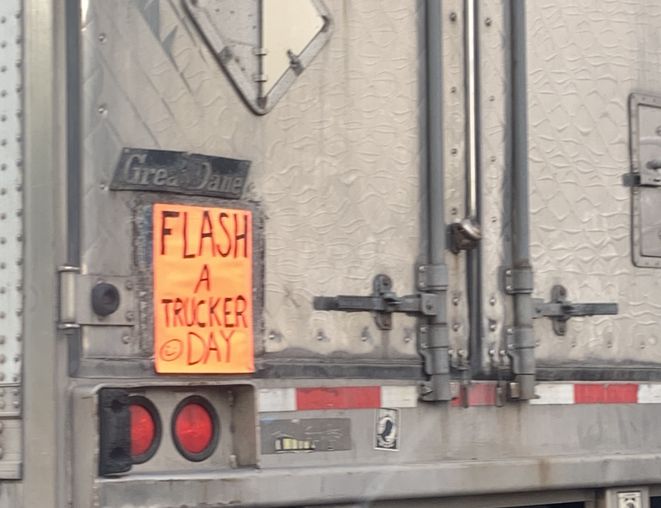

Contrast is an important principle for designing interesting layouts. You can employ contrast between filled and empty space...contrasting sorts of lines or shapes... sizes of objects...introducing pattern to no pattern...two different kinds of patterns or two different kinds of textures...color and value also offer powerful contrast tools...using both dark and light values and colors result in contrast.
White Space is Not You Enemy, by Golombisky and Hagen (2016). Focal Press.
Contrast is the juxtaposition of opposite characteristics to create visually interestinng content.

The neon sign on the back of the truck contrasts with the color of the vehicle. Therefore, the sign is easily seen and attracts the eye.